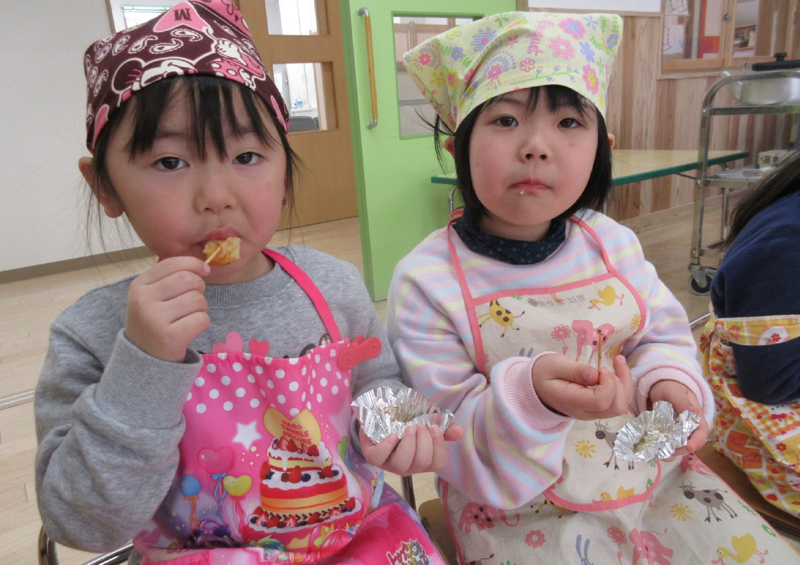
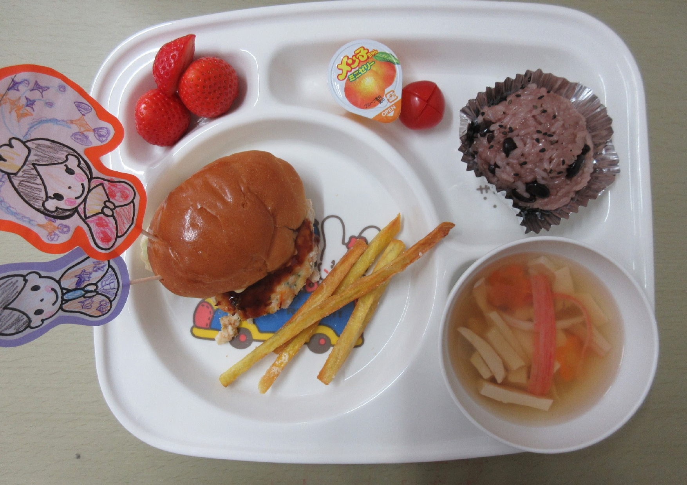
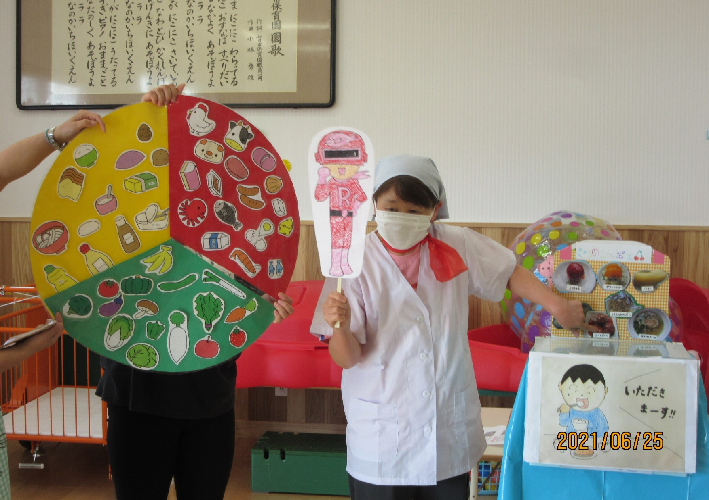
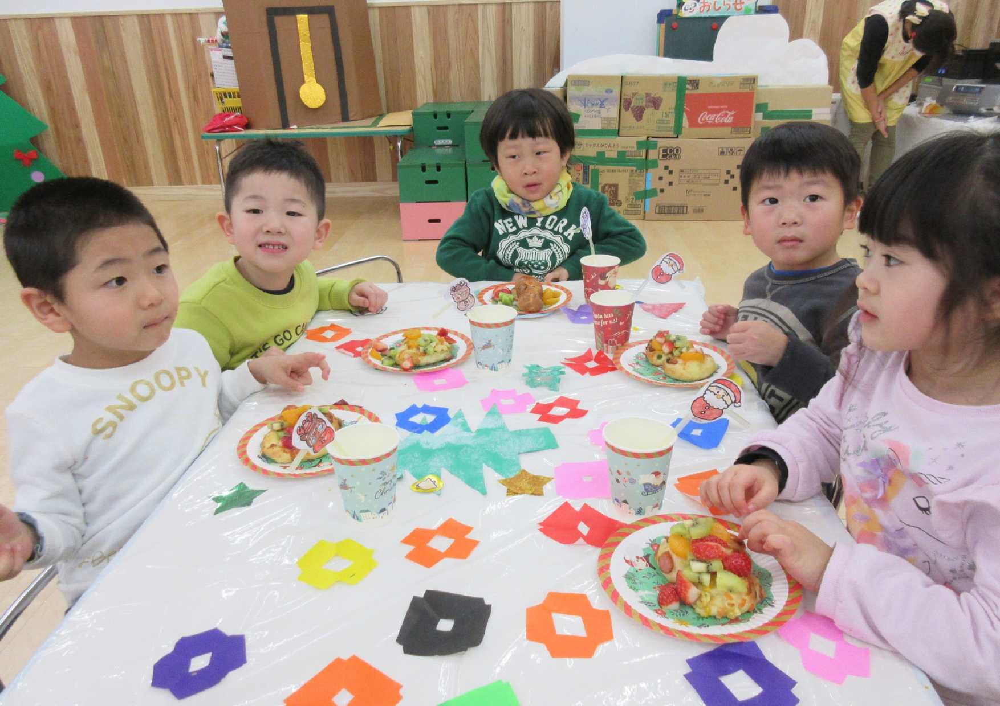
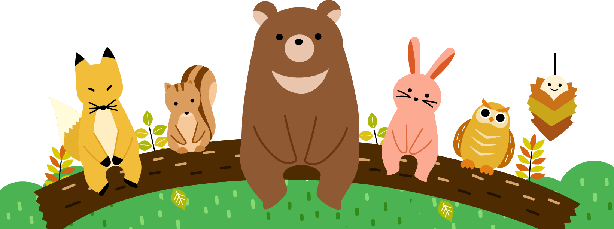

食育活動について
食育活動についてのテキストが入ります。食育活動についてのテキストが入ります。食育活動についてのテキストが入ります。食育活動についてのテキストが入ります。食育活動についてのテキストが入ります。食育活動についてのテキストが入ります。 食育活動についてのテキストが入ります。食育活動についてのテキストが入ります。食育活動についてのテキストが入ります。


食への取り組みについて
食への取り組みについてのテキストが入ります。参考サイトをご覧ください。食への取り組みについてのテキストが入ります。参考サイトをご覧ください。食への取り組みについてのテキストが入ります。参考サイトをご覧ください。 食への取り組みについてのテキストが入ります。参考サイトをご覧ください。食への取り組みについてのテキストが入ります。参考サイトをご覧ください。


お問い合わせ
保育園に関するご相談・ご意見はこちからどうぞ。
お電話でお問い合わせください。
0120-1234-1234

©2022 七日市保育園